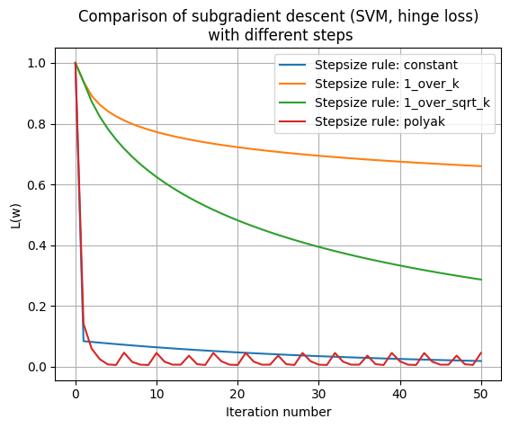
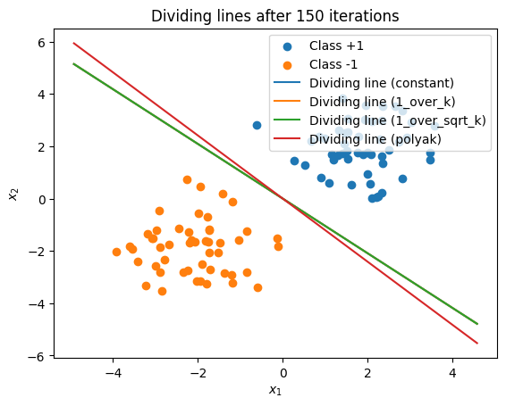

import numpy as np
import matplotlib.pyplot as plt
np.random.seed(42)
N = 100 # number of objects
X1 = np.random.randn(N//2, 2) + np.array([2, 2])
X2 = np.random.randn(N//2, 2) + np.array([-2, -2])
X = np.vstack([X1, X2]) # the matrix of objects x features
y = np.hstack([np.ones(N//2), -np.ones(N//2)]) # class labels: +1, -1
# Let's mix everything together for clarity
perm = np.random.permutation(N)
X = X[perm]
y = y[perm]A problem of the form is solved: L(w) = \frac{\lambda}{2} \lVert w \rVert^2 + \frac{1}{N} \sum_{i=1}^{N} \max \left\{ 0,\ 1 - y_i w^T x_i \right\}. It can be shown that the subgradient g(w) = \lambda w + \frac{1}{N} \sum_{i=1}^{N} \begin{cases} -y_i x_i, & \text{if } \ y_i w^T x_i < 1, \\ 0, & \text{otherwise}. \end{cases} The function \ell_i(w) = \max\left\{ 0,\ 1 - y_i w^T x_i \right\} is called hinge loss.
Let’s generate data for classification:
Objective (hinge loss):
def hinge_svm_objective(w, X, y, lambd):
"""
Returns the value of the functional:
L(w) = (lambda/2)*||w||^2 + (1/N)*sum( max(0, 1 - y_i * w^T x_i) ).
"""
margins = 1 - y * (X.dot(w))
hinge_losses = np.maximum(0, margins)
return (lambd/2)*np.sum(w**2) + np.mean(hinge_losses)The subgradient of the functional:
def hinge_svm_subgradient(w, X, y, lambd):
"""
Returns the subgradient g(w) for:
g(w) = lambda*w + (1/N)*sum( -y_i*x_i, если y_i*w^T x_i < 1 ).
"""
N = X.shape[0]
margins = 1 - y * (X.dot(w))
active_mask = (margins > 0).astype(float) # где hinge>0
# Суммируем -y_i*x_i по всем активным (margin>0)
grad_hinge = -(y * active_mask)[:, np.newaxis] * X
grad_hinge = grad_hinge.mean(axis=0)
g = lambd*w + grad_hinge
return gSubgradient descent implementation:
def subgradient_descent(
X, y, lambd=0.01,
max_iter=150,
step_rule='constant',
c=1.0,
f_star=0.0
):
"""
Subgradient descent for SVM with hinge loss:
Параметры:
X, y : selection
lambd : the regularization coefficient
max_iter : iteration number
step_rule : step selection strategy:
- 'constant' -> alpha_k = c
- '1_over_k' -> alpha_k = c/k
- '1_over_sqrt_k' -> alpha_k = c/sqrt(k)
- 'polyak' -> alpha_k = (f(w_k) - f_star)/||g_k||^2
c : constant for the step (used in all but not for 'polyak')
f_star : estimated minimum (for polyak)
Возвращает:
w_history : the list of vectors w at each iteration
loss_history: the list of values of the functional L(w) at each iteration
"""
w = np.zeros(X.shape[1])
w_history = [w.copy()]
loss_history = [hinge_svm_objective(w, X, y, lambd)]
for k in range(1, max_iter+1):
g = hinge_svm_subgradient(w, X, y, lambd)
loss_current = hinge_svm_objective(w, X, y, lambd)
# Выбираем шаг
if step_rule == 'constant':
alpha = c
elif step_rule == '1_over_k':
alpha = c / k
elif step_rule == '1_over_sqrt_k':
alpha = c / np.sqrt(k)
elif step_rule == 'polyak':
# Polyak's step: (f(w) - f_star) / ||g||^2 (with a zero cut-off from below)
denom = np.dot(g, g)
if denom < 1e-15:
alpha = 0.0
else:
alpha = (loss_current - f_star) / denom
alpha = max(alpha, 0.0) # чтобы шаг не был отрицательным
else:
raise ValueError("Неизвестная стратегия шага")
# Update w
w = w - alpha*g
w_history.append(w.copy())
loss_history.append(hinge_svm_objective(w, X, y, lambd))
return w_history, loss_historyRunning an experiment for different step rules:
max_iter = 50
lambd = 0.01
# For example Polyak step size will be considered f^*=0 (simplification for demonstration)
f_star_demo = 0.0
strategies = {
'constant': 1.5, # constant step size
'1_over_k': 5.0, # for 1/k
'1_over_sqrt_k': 5.0, # for 1/sqrt(k)
'polyak': None # for Polyak is None
}
results = {}
for rule, c_val in strategies.items():
w_hist, loss_hist = subgradient_descent(
X, y, lambd=lambd, max_iter=max_iter,
step_rule=rule,
c=c_val if c_val is not None else 1.0,
f_star=f_star_demo
)
results[rule] = (w_hist, loss_hist)Vizualization:
plt.figure()
for rule in strategies.keys():
loss_hist = results[rule][1]
plt.plot(loss_hist, label=f"Stepsize rule: {rule}")
plt.xlabel("Iteration number")
plt.ylabel("L(w)")
plt.title("Comparison of subgradient descent (SVM, hinge loss)\n with different steps")
plt.legend()
plt.grid(True)
plt.show()
plt.figure()
plt.scatter(X[y==1, 0], X[y==1, 1], label="Class +1")
plt.scatter(X[y==-1, 0], X[y==-1, 1], label="Class -1")
x_vals = np.linspace(X[:,0].min()-1, X[:,0].max()+1, 200)
for rule in strategies.keys():
w_final = results[rule][0][-1]
if abs(w_final[1]) < 1e-15:
x_const = -0.0
plt.plot([x_const, x_const], [X[:,1].min()-1, X[:,1].max()+1],
label=f"Dividing line ({rule})")
else:
y_vals = -(w_final[0]/w_final[1]) * x_vals
plt.plot(x_vals, y_vals, label=f"Dividing line ({rule})")
plt.xlabel("$x_1$")
plt.ylabel("$x_2$")
plt.title("Dividing lines after 150 iterations")
plt.legend()
plt.show()
